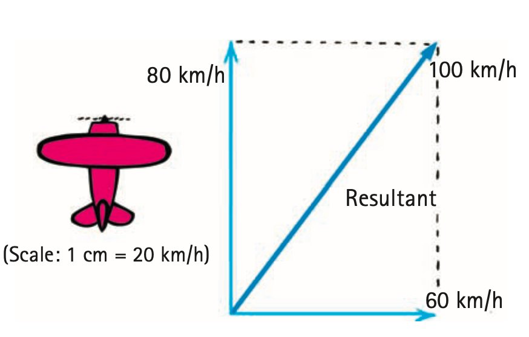
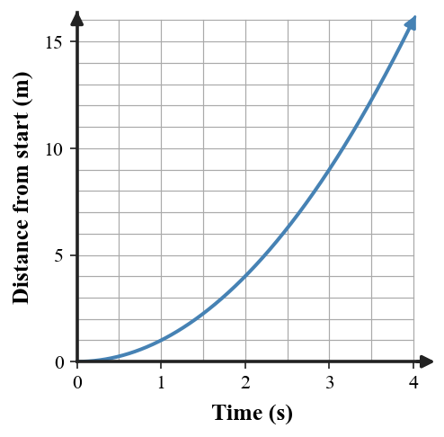

Velocity Vectors and Motion Modeling
Mathematical idea: Arrow length and direction encode velocity, while tables and graphs should agree with the same motion story.
You will read source vector diagrams, compare changing velocities, connect a table to a generated motion graph, and practice critiquing inconsistent models.
Learning Target
Students will use velocity vectors, motion diagrams, and simple graphs to model and explain the motion of objects.
I can statements
- I can represent velocity with arrows that show both speed and direction.
- I can compare velocity vectors to determine whether an object’s velocity is changing.
- I can connect motion diagrams, data tables, and graphs to written descriptions of motion.
- I can critique an incorrect motion model and revise it using evidence.
Vocabulary
These are words you will see in this section. Do not define them yet.
- scalar quantity
- vector quantity
- velocity vector
- magnitude
- resultant
- motion model
- motion diagram
Use the preview activity to decide which words you already know, recognize, or do not know yet. Watch for these words in bold when they are first introduced or defined in the reading.
Preview: Skim Before You Read
Directions
Before reading closely, skim the vocabulary list and the section. Look at titles, headings, bold words, pictures, captions, diagrams, tables, and formulas. Do not try to understand everything yet. Your job is to notice what already looks familiar and make predictions about what this section may explain.
Step 1 — Sort the vocabulary. Write each vocabulary word in the column that best matches what you know right now. You may move a word later.
| Know for sure | Recognize | Don’t know yet |
|---|---|---|
Step 2 — Skim the section. Record what catches your attention before you read closely.
| What I noticed | |
|---|---|
| What I predict | |
| What I wonder |
Content: Read, Look, Annotate, Apply
Directions
Read in short chunks. Annotate the prose and the figures together: underline evidence, circle or highlight bold vocabulary, label arrows or measured features, connect a sentence to an image, and write short questions or connections in the margins.
Reading 1: Velocity Drawn as an Arrow
A scalar quantity is described by magnitude only; speed is an example. A vector quantity needs both magnitude and direction; velocity is an example. The distinction lets a diagram carry more information than a single number.
A velocity vector is an arrow used to represent velocity. The arrow points in the direction of motion, and its length can represent the velocity’s magnitude, or speed, when a scale is provided.
The source airplane example uses a scale of 1 cm for 20 km/h. An 80-km/h northward velocity and a 60-km/h crosswind can therefore be represented by arrows whose directions and scaled lengths show both motions.

Image read: Label which arrow shows the airplane’s motion through the air, which shows the wind, and which diagonal shows the combined ground motion. Compare both arrow length and direction.
The diagonal arrow in the source figure is the resultant: it represents the combined effect of the two velocity vectors. The important modeling habit is to read an arrow as two pieces of evidence at once—magnitude and direction.
Stop and Discuss
- How does arrow length communicate something different from arrow direction in a velocity-vector model?
- In the airplane figure, why is the diagonal vector a better description of motion relative to the ground than either component vector alone?
Arrow length
Represents the magnitude of velocity—the speed value when the drawing uses a scale.
Arrow direction
Represents the direction of motion.
Two velocity vectors are the same only when both their lengths (for the same scale) and their directions match.
Example 1: Compare Two Velocity Arrows
Vector A points east and is 4 cm long. Vector B points east and is 6 cm long. Both use the same scale.
- Which vector represents the greater speed?
- Do the two vectors represent the same velocity? Explain.
- What must be true for two velocity vectors to match exactly?
You Try It 1: Same Length, New Direction
Two velocity arrows are both 5 cm long. One points north and the other points west.
- Compare the speeds represented by the arrows.
- Compare the velocities.
- Explain what evidence shows that velocity changed.
Reading 2: Changing Direction Changes the Velocity Model
Velocity vectors make direction changes visible. If successive arrows stay the same length but rotate, speed can remain constant while velocity changes. This connects directly to the earlier acceleration idea: changing direction means changing velocity.
The chapter review extends the airplane example by changing the wind direction while keeping the airplane’s own velocity represented by the same upward arrow. The combined ground velocity changes because the second vector changes.

Image read: Compare cases A, B, and C. Mark what stays the same, what changes, and how you expect the resultant ground-velocity arrow to change.
A good vector model lets a reader make a claim and point to evidence: “the speed stayed the same because the arrows have equal length,” or “the velocity changed because the arrow direction changed.” The model should not rely on labels alone.
Another review example shows boats crossing a moving river. The boat’s heading and the river flow are separate motions; a shore observer sees the combination. Different headings can therefore produce different velocities relative to shore.

Image read: Choose one boat and identify the two velocity influences shown by the arrows. Predict the direction of the boat’s motion relative to shore.
Stop and Discuss
- In the airplane review image, what evidence could show equal speed but different velocity?
- Why can a boat’s velocity relative to the water differ from its velocity relative to the shore?
Example 2: Drone Makes a Turn
A drone flies east with a velocity arrow 4 cm long, then turns north while its new velocity arrow remains 4 cm long.
- What happened to the speed?
- What happened to the velocity?
- Use the vector evidence to decide whether the drone accelerated during the turn.
You Try It 2: Cyclist Vector Revision
A student draws two equal-length east-pointing velocity arrows for a cyclist who actually turns south without changing speed.
- What part of the model is correct?
- What part is incorrect?
- Describe how the second arrow should be revised.
Reading 3: One Motion Story, Several Representations
A motion model is a representation used to describe or explain how motion changes. The assessment plan asks you to connect written descriptions, data tables, graphs, velocity vectors, and motion diagrams rather than treating each representation as a separate topic.
A motion diagram shows an object’s position at equal time intervals. If the dots are equally spaced in a straight line, the object covers equal distances in equal times, which is evidence of constant speed. If the spacing grows, the object covers more distance during later equal-time intervals, which is evidence of increasing speed.
A data table can show the same story numerically. In the table below, the distance gained during each one-second interval increases, so the object is speeding up rather than moving at constant speed.
| Time (s) | Distance from start (m) |
|---|---|
| 0 | 0 |
| 1 | 1 |
| 2 | 4 |
| 3 | 9 |
| 4 | 16 |
The graph below displays the same time–distance pattern. As time increases, the graph becomes steeper, matching the fact that the object covers more distance in each later second. The graph and table should support the same written motion description.

Image read: Use the table to check four plotted graph values. Then mark where the graph is less steep and where it is more steep, and connect that change to the motion story.
Critiquing a model means checking for consistency. If a written description says “constant speed,” but the motion-diagram spacing grows or the distance–time graph becomes steadily steeper, the representations disagree. A revision should change the incorrect representation so all evidence tells the same story.
Stop and Discuss
- What dot-spacing pattern would a motion diagram need to show constant speed? What pattern would show increasing speed?
- Use the data table and graph to explain why “constant speed” would be an incorrect description of this motion.
Example 3: Critique a Constant-Speed Claim
A student claims an object moves at constant speed. Their distance–time graph becomes steeper as time passes.
- Does the graph support the claim? Explain.
- Describe what a constant-speed distance–time graph should look like qualitatively.
- Describe what equal-time motion-diagram spacing should look like for the corrected model.
You Try It 3: Table, Diagram, and Story
A motion table shows equal increases of 3 m during every 1-s interval, but a student draws motion-diagram dots that get farther apart each second.
- What motion does the table support?
- What motion does the dot-spacing description support?
- Which part of the model should be revised so the representations agree, and how?
Vocabulary: Define the Terms
You have now seen these words in the reading, images, and practice. Use this table to consolidate the physics meaning of each term.
| Vocabulary term | Definition |
|---|---|
| scalar quantity | A quantity described by magnitude only. |
| vector quantity | A quantity described by both magnitude and direction. |
| velocity vector | An arrow representing velocity, with direction shown by the arrow and magnitude represented by its length when a scale is used. |
| magnitude | The size or numerical amount of a quantity; for a velocity vector, the magnitude is the speed. |
| resultant | A single vector representing the combined effect of two or more component vectors. |
| motion model | A representation—such as words, data, a graph, or vectors—used to describe or explain motion. |
| motion diagram | A sequence of object positions shown at equal time intervals. |
Summary
- Velocity vectors show both speed magnitude and direction.
- Equal-length vectors can still represent different velocities if their directions differ.
- A change in vector length, direction, or both is evidence that velocity changed.
- Motion diagrams, data tables, graphs, and written descriptions should tell a consistent motion story.
- A strong critique identifies the mismatch, cites evidence, and revises the incorrect representation.
Common Mistakes
| Mistake | Why it is tempting | Check instead |
|---|---|---|
| Comparing vector direction but ignoring length. | Arrows make direction visually obvious. | Check both arrow direction and scaled length. |
| Saying equal-length arrows are equal velocities. | Equal length means equal magnitude. | Verify that direction also matches. |
| Reading a graph without checking the table or story. | One representation may look familiar. | Cross-check at least two representations for consistency. |
| Calling a model wrong without citing evidence. | The conclusion may feel obvious. | Point to a specific arrow, spacing pattern, table change, or graph feature. |
What two features of an arrow are needed to represent velocity?
A motion diagram has equal dot spacing at equal time intervals, but a written description says the object is speeding up. Identify the mismatch and state which description is supported by the diagram.
What is one thing you learned in this section? Explain it in at least one complete sentence.
What is one thing from this section you still need to understand or practice more? Be specific.